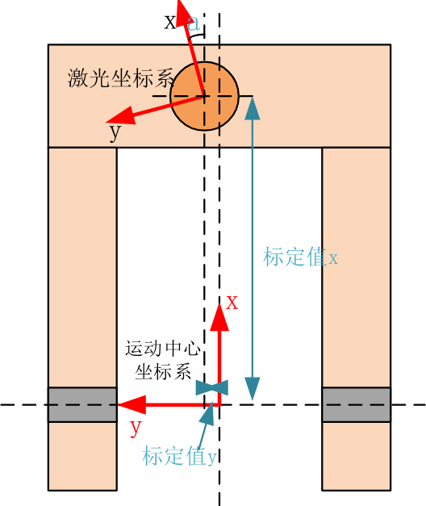
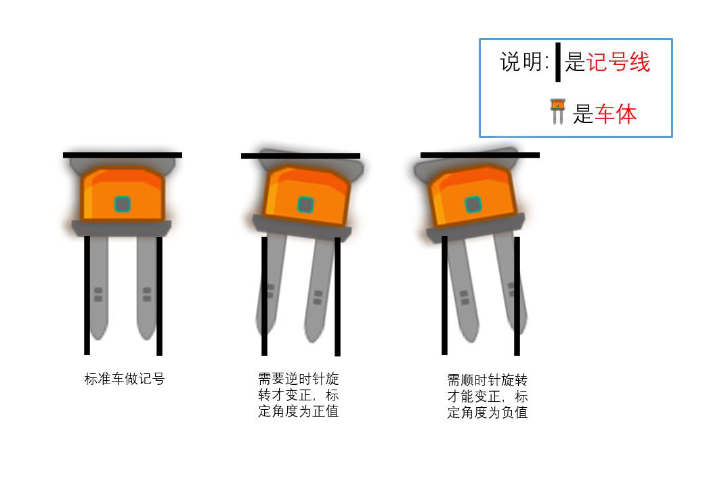
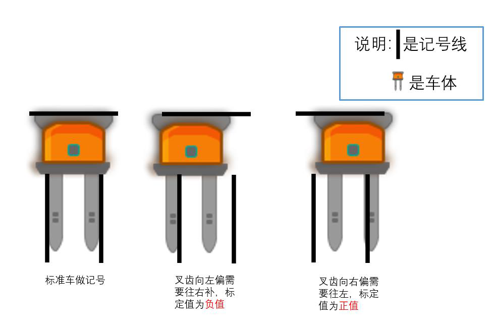
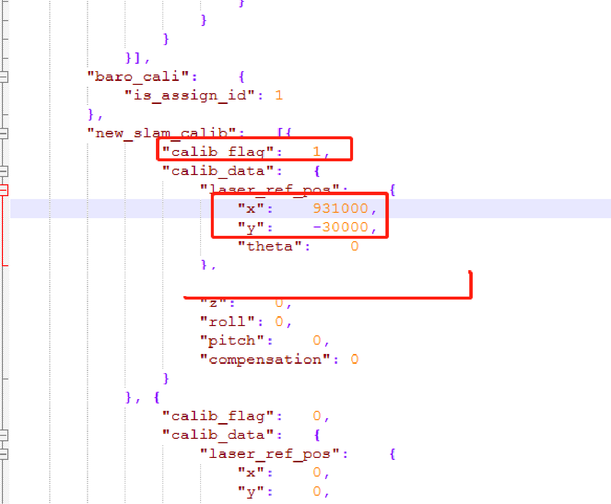

叉车激光标定与多车一致性调整
多台叉车在同一储位点停车姿态反复不一致，本质是导航激光相对运动中心的安装偏差不同。本篇按手册补全标定原理、参考线选取、角度与侧向的符号规则、运动误差扣除，以及旧版指令标定、主控 2.8 以上整包 JSON 标定和全向叉车差异。
地图与定位目录
本篇为基于厂商操作手册的原创整理，只提炼流程与判断方法，不复制原文；不同版本与控制器存在差异，结论请结合现场验证使用。
标定值的含义与坐标系
标定本质是修正导航激光相对运动中心的安装偏差。标定值是绝对量，不是相对上次的增量，描述激光在车体坐标系中的安装位置与角度。
- x：激光到运动中心的前向距离；激光位于运动中心上侧时为正。
- y：激光相对运动中心的侧向距离；激光位于运动中心左侧时为正。
- a（theta）：激光坐标系 x 轴与运动中心坐标系 x 轴的夹角，理想值为 0。
- 单位：x、y 为千分之一毫米（1000 = 1mm），角度为千分之一度（500 = 0.5°）。写入时只能改数值，不能改单位。
运动中心的位置随机型不同：标准叉车位于后侧叉轮之间，全向叉车位于车体几何中心。这是两类车标定结果差异较大的根本原因。

先判断：标定问题还是运动误差
多车在同一点姿态不一致，不一定是激光装歪了。到点偏差由两部分组成：激光安装偏差与定位运动误差。标定只修正前者。
- 如果该车车体坐标与目标点坐标的差值，恰好等于它相对基准车的物理偏差，说明这部分的偏差来自运动误差，不应改标定值。
- 只有偏差来自激光安装（同一台车在不同方向、不同点位都呈现同向固定偏差）时，才进入标定流程。
- 基准车反馈的坐标与目标点坐标在 X、Y 方向相差小于 1cm，才可认为定位正常并开始做标记。
会把定位偏差固化成安装偏差，车在别的点位、别的方向反而更偏，且多车一致性越调越差。判不清时先按“扣运动误差”的公式算一遍再动手。
基准车确认与参考线绘制
标定不是各车独立调平，而是所有车都对齐到同一台基准车的参考线。
- 候选车分别以 180° 与 0°（或 90° 与 -90°）方向发往同一个目标点。
- 每次到点后在地面沿车体侧面或叉齿做好标记，得到两条可对比的标记线。
- 选择左右标记误差小、标记线接近水平的车作为基准车。这一步同时反映车辆激光安装精度与出厂标定质量。
- 其余车辆均以基准车的标记线为参考，逐台修正。
标定点要选定位特征明显的位置，例如墙角、墙体柱子附近；空旷区域或特征重复的通道不要用，取出来的参考线自身误差就大。
参考线不水平、两次标记左右偏差大时，宁可换车、换点位重画，不要“先凑合用”。否则所有车的标定都会继承这份误差。
标定顺序与符号规则
观察方向固定为从车尾向车头看（从叉齿末端朝导航激光方向看）。顺序固定：先角度，再侧向 y，前向 x 原则上不标。
| 项目 | 判断方法 | 取值方向 |
|---|---|---|
| 角度 theta | 车体需要往哪个方向转才能与参考线平行 | 需要逆时针转正取正；需要顺时针转正取负 |
| 侧向 y | 叉齿相对参考线偏向哪一侧 | 叉齿偏左取负；偏右取正 |
| 前向 x | 仅在安装明显异常时处理 | 一般不动 |
角度一次没调到位可分多次逼近：每次都在上一次的值上累加/累减，不要每次从零重设，否则容易来回震荡。


运动误差扣除的计算
出现“多车不一致”时，先按下面的量关系算清楚，再决定要不要写标定值。
- 物理差值：该车到点后，叉齿/车体相对基准车标记线的实际偏移量（卷尺量取）。
- 运动误差：该车反馈的车体坐标减目标点坐标。
- 应写入的修正量 ≈ 物理差值 − 运动误差。剩余部分才归因于激光安装。
示例：某车相对基准车向左偏 3cm，而反馈坐标与目标点在 X 方向恰好相差 30mm，说明这 3cm 完全由运动误差造成，不要改该车的激光标定值，应去查定位与底盘运动。
量取时要固定同一参考面（叉齿端面或车体侧面），同一方向多次到点取稳定值；用目测代替测量，很容易把毫米级安装偏差和厘米级运动误差混在一起。
旧版主控：读值、写入与重启验证
适用于主控 2.6 前后、尚未提供整包导入导出的版本。核心是通过调试命令读当前标定值，改后写回并重启验证。
- 先开启打印（
castor_cli -T 1），读取当前标定值，在输出中定位标定字段，取得 x、y、theta 三个值。 - 发移动任务，对比与参考线的偏差，先只调角度：需要逆时针转 0.5° 时，在当前 theta 上增加 500（即 +0.5°）。
- 写入后重启车辆，再发任务复测角度；未到位则继续在上一次值上累加，直到车体与参考线平行。
- 角度稳定后再标 y：叉齿左偏 20mm 时，在当前 y 上减 20000；右偏则加 20000。
- 重启并回读确认，再与参考线对比，反复微调至接近重合。
- 排查结束执行
castor_cli -T 0关闭打印。
写入指令形如 castor_cli -R "5 <x> <y> <theta>"，三个值必须同时给出，且 x、y 保持回读到的现值，只改需要调整的项。
主控 2.8 及以上：整包 JSON 标定
新版本改为整包导出、改文件、再导入，避免逐台逐项敲命令。适用于需要批量核对多车、或首次补 uid 的场景。
- 开启打印后发移动任务，读取当前标定值，确认要改的字段。
- 在挂载目录执行导出命令，生成全量标定数据
all_calib_data.json并下载到本地。 - 用文本编辑器修改其中的 X、Y、theta，单位与格式保持原样，原文件另存一份备份。
- 首次标定（
calib_flag为 0）时：把标志位改为 1，补齐激光 uid，并把硬件打印的十六进制 uid 换算为十进制写入；x 参考硬件打印的加密值按差异修改。 - 已有标定时：只调整 x、y、theta，不动 uid 与标志位。
- 删除设备上的原文件，上传修改后的文件，执行导入命令。
- 再次读取确认参数已更新，最后软重启车辆并复测。

若重启后回读参数与写入值不符，说明文件未真正写入（常见于未删除原文件、上传到了错误目录、格式被编辑器改写）。先核对路径与文件时间戳，不要反复重试同一个文件；仍不生效时联系主控研发。
全向叉车的差异
全向叉车坐标系与标准叉车一致，符号规则可沿用，但有三处必须注意：
- 运动中心不同：位于车体几何中心而非叉轮之间，因此激光到运动中心的距离明显不同，不能照抄标准叉车的 x。
- 读取参数索引不同：读标定值时的参数索引与标准叉车不一致，实施前按机型确认；读值可用
castor_cli -Q "2 0 0 0"一类查询指令，索引以现场版本为准。 - 通常只标角度与侧向 y，前向 x 不标定；写入用
castor_cli -R "5 <x> <y> <theta>"，三个值成套写入后重启。
手册不同章节对全向车角度的正负表述存在不一致，实施时以车体实际需要旋转的方向为准：逆时针转正取正、顺时针转正取负，并且先给一个保守的小量试调，确认转向正确后再补足。
全向车原地旋转时的偏移受运动中心与底盘参数影响，标定只修正激光安装角。旋转方向或中心明显不对时，应查底盘参数与运动中心配置。
验证与返工条件
验证：
- 同一储位点重复到点，叉齿与参考线的横向偏差稳定在可接受范围，且不随发车方向（0°/180°）改变。
- 同一台车多次到点偏差收敛，不出现忽左忽右的大幅跳变。
- 写入的参数回读后与设定一致，重启后仍保持不变。
- 车体坐标与目标点坐标的残差明显小于标定前。
需要返工：
- 重启后回读值与写入值不符，或修改被覆盖。
- 只调了角度未复测侧向，两项相互影响。
- 基准车自身两条标记线左右误差明显，需重选基准车、重画参考线。
- 标定点定位环境差，参考线本身不可靠。
- 扣完运动误差后多车仍呈系统性同向偏移，说明基准或导入流程有问题，应整体复查。
标定结束后关闭打印、恢复临时修改的文件权限，并把每台车的最终 x/y/theta、uid 与复测结果登记到实施记录，后续换件、返修才有对照基准。
上线前核对
- 已确认多车不一致属激光安装偏差，而非定位运动误差
- 基准车经 180° 与 0°（或 90° 与 -90°）两次到点标记选出，标记线左右误差小
- 标定点选在墙角、柱子等定位特征明显处，未在空旷区域取线
- 基准车坐标与目标点偏差已小于 1cm 才开始做标记
- 观察方向为从车尾向车头看，标定顺序为先角度、再侧向 y，x 原则上不标
- 角度符号按逆时针转正取正、顺时针转正取负执行，并采用累加方式逼近
- 侧向符号按叉齿左偏取负、右偏取正执行
- 写入前已按“物理差值 − 运动误差”核算，未把定位偏差写进激光参数
- 每次写入后均重启并回读，确认参数未被覆盖
- 首次整包标定已把 calib_flag 置 1、uid 十六进制换算为十进制并补齐
- 全向叉车按机型确认读值索引，未照抄标准叉车前向 x
- 已在同一储位点双向复测，多车偏差稳定收敛